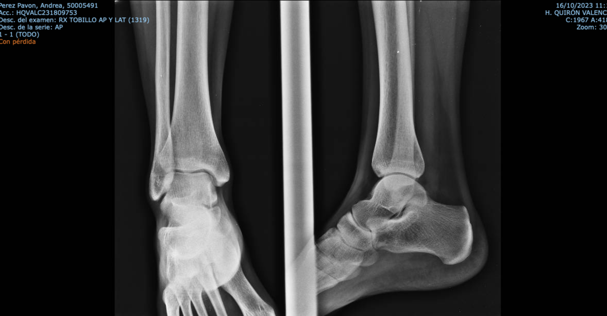
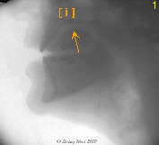
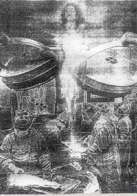
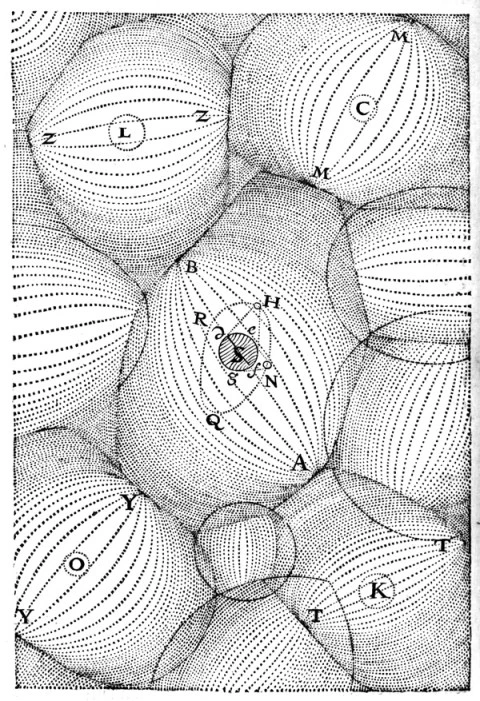
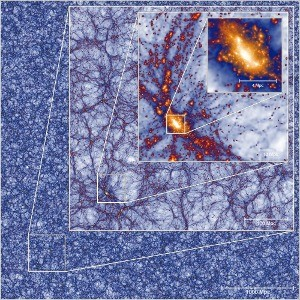
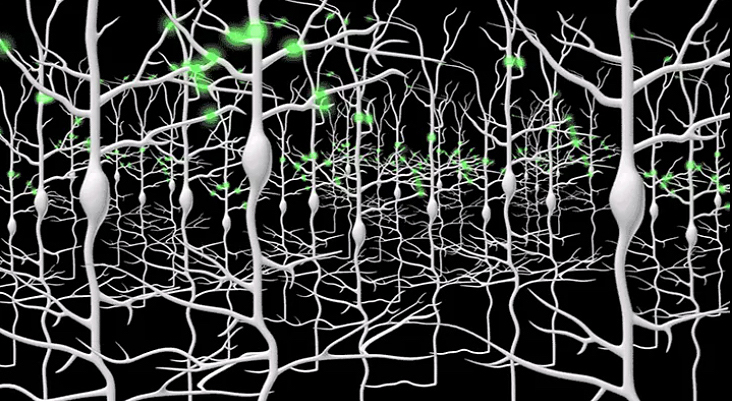

see


Anatomy of a sinner
Is there some one? can you se through my skin? my insides are no secret for you must take control pver every bit of my being
Another section of content
   
watch
cerebro formado aproximadamente por 80% de agua 10% de lípidos 8% de proteínas y el resto de sustancias orgánicas solubles carbohidratos y sales inorgánicas ¿cómo es posible que con estos ingredientes se haya creado una máquina como es nuestro cerebro ?
primer organismo vivo tiene 3500 millones de años
primeras neuronas 600 millones de años
homo sapiens surge hace 200 000 años